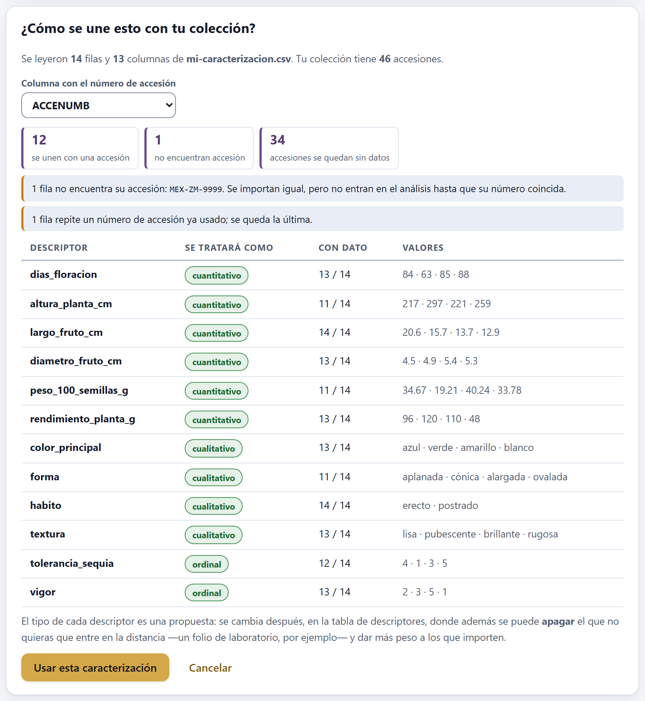
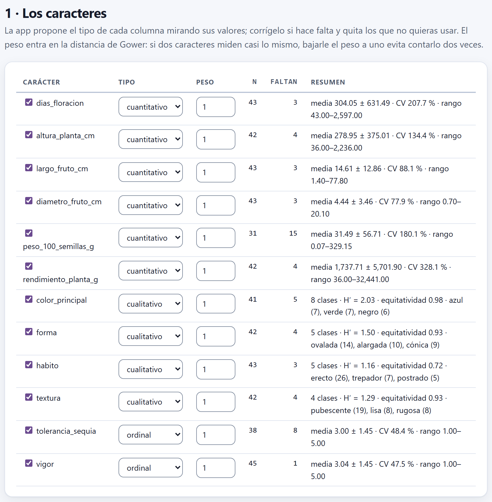
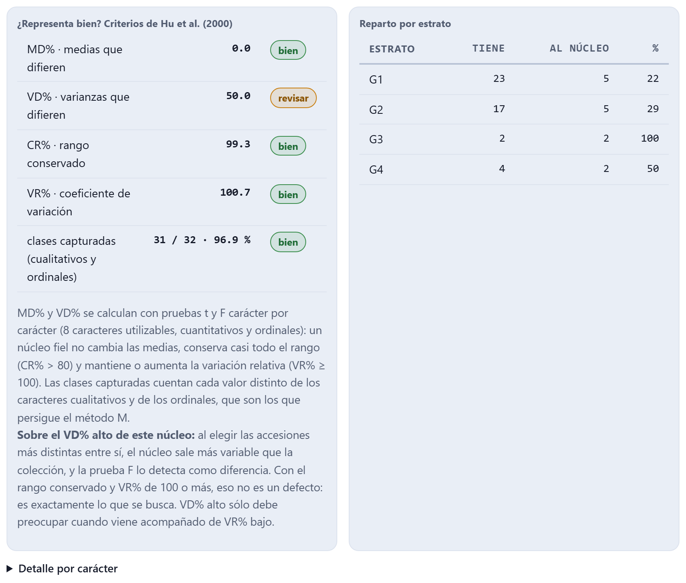
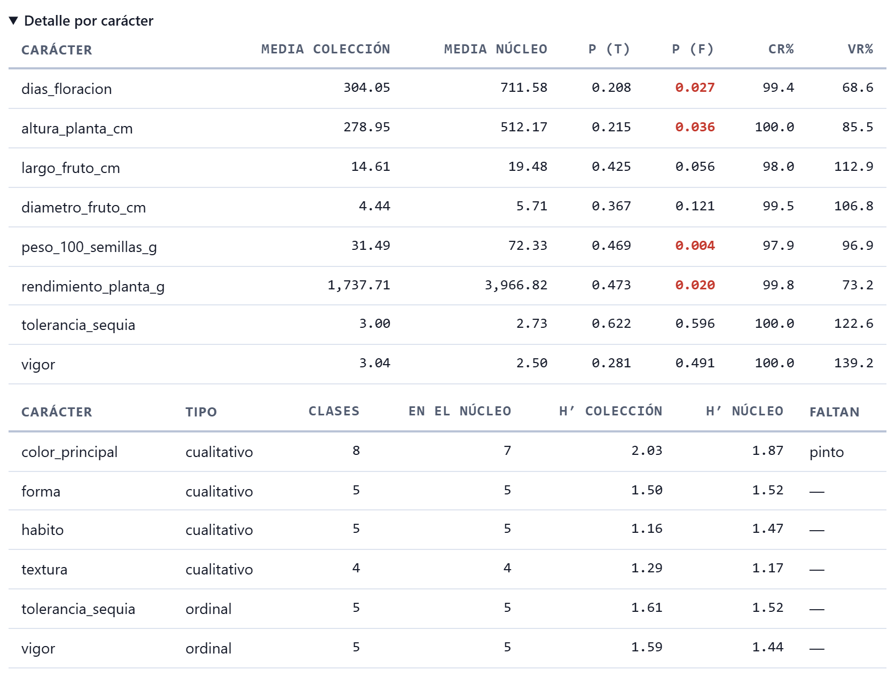
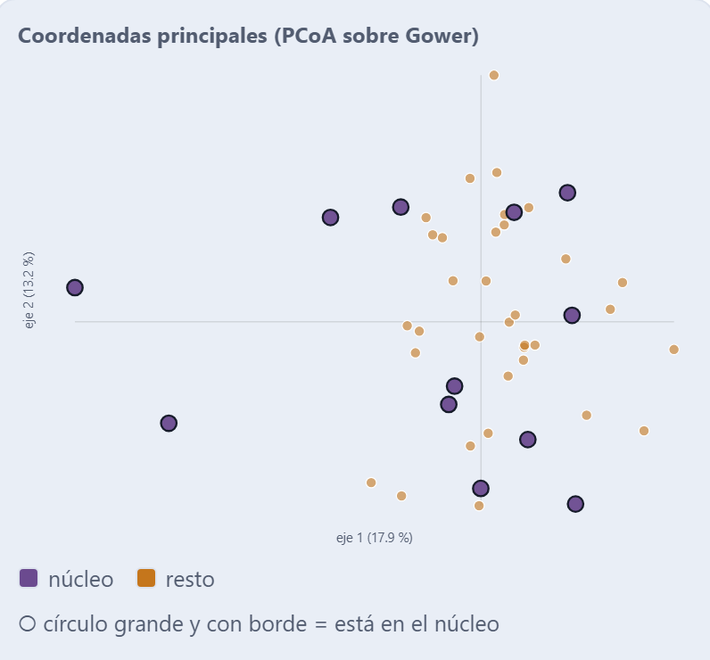
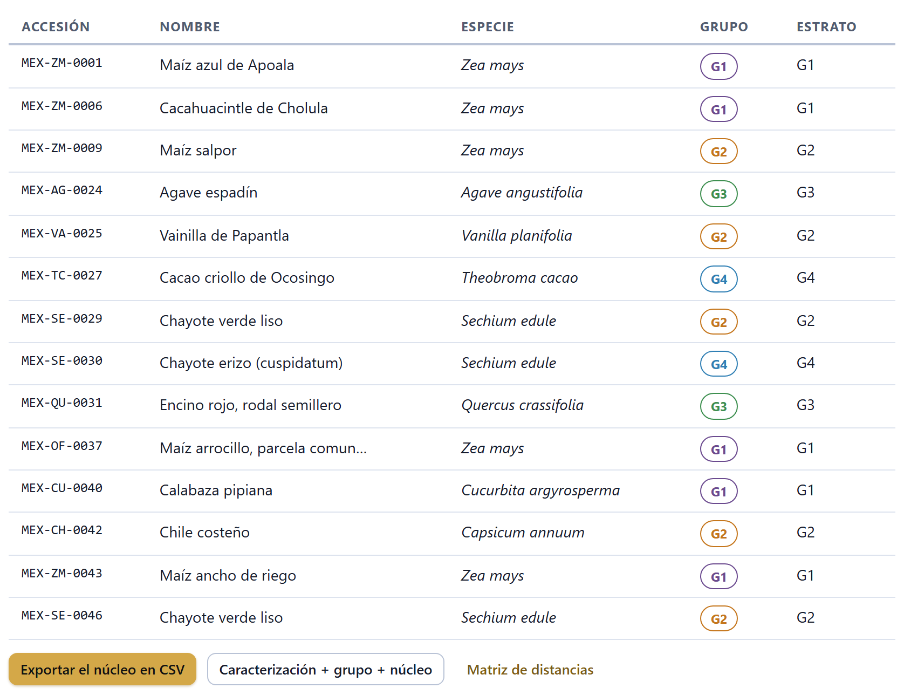

Caracterización y colección núcleo
El pasaporte dice quién es cada accesión y de dónde viene; la caracterización dice cómo es. El Bloque 7 recibe lo que mediste en campo y en laboratorio —números, escalas, colores y celdas vacías, todo junto—, describe la variación carácter por carácter, mide qué tanto se parecen las accesiones con la distancia de Gower, las ordena en un mapa de parecido y en un árbol y, con eso, arma una colección núcleo: el subconjunto pequeño que puedes caracterizar a fondo o evaluar en campo sin mover todo el banco. Al final comprueba, con los criterios de Hu et al., que ese núcleo de verdad representa a la colección.
- 7.1Traer la caracterización y unirla con la colección
- 7.2Los caracteres: tipo, peso y variación
- 7.3La distancia de Gower
- 7.4El mapa de parecido: coordenadas principales
- 7.5El agrupamiento y la silueta
- 7.6La colección núcleo: estratos, reparto y elección
- 7.7¿Representa bien? Los criterios de Hu et al.
- 7.8Exportar, y cómo cambia el núcleo con las opciones
7.1Traer la caracterización y unirla con la colección
El Bloque 7 trabaja con dos tablas: el pasaporte del Bloque 2 (capítulo 2) y una tabla de caracterización con una fila por accesión y una columna por descriptor. Las dos se unen por el número de accesión, ACCENUMB, que es la llave de toda la app. Si no hay pasaporte, el bloque dice Primero carga tus accesiones en el Bloque 2.; si hay pasaporte pero no caracterización, Todavía no hay datos de caracterización: cárgalos o abre los del ejemplo con el botón de arriba.
![La cabecera del Bloque 7: el título Bloque 7 · Caracterización y colección núcleo, el párrafo de presentación, los botones Cargar mi caracterización (CSV), Pegar desde una hoja de cálculo, Usar la caracterización de ejemplo, Descargar la plantilla y Quitar la caracterización, la nota sobre la columna ACCENUMB y seis recuadros: 46 accesiones caracterizadas de 46 en la colección con 12 caracteres, 4 grupos con silueta media 0.14, núcleo de 5 accesiones (10.9 % de las caracterizadas), MD% 0.0, CR% 75.2 y VR% 91.4](../img/b7-cargar.png)
| Botón | Qué hace |
|---|---|
| Cargar mi caracterización (CSV) | Lee un archivo .csv, .tsv o .txt delimitado y abre la tarjeta de confirmación (figura 7.2). |
| Pegar desde una hoja de cálculo | Abre la misma ventana de pegado del Bloque 2 (apartado 2.3), con el título Pega tu caracterización. Copia el bloque de celdas con su fila de encabezados y pégalo; también termina en la tarjeta de confirmación. |
| Usar la caracterización de ejemplo | Genera la caracterización de ejemplo para las accesiones cargadas y calcula todo el bloque de inmediato, con la espera animada Calculando la caracterización y el núcleo. |
| Descargar la plantilla | Guarda plantilla-caracterizacion.csv: la columna ACCENUMB ya llena con todas tus accesiones y seis columnas vacías con las claves del catálogo de descriptores: DIAS_FLORACION, ALTURA_PLANTA, LARGO_FRUTO, COLOR_EXTERNO, FORMA_FRUTO y HABITO. Son las mismas claves que el Bloque 2 reconoce como caracterización al importar (apartado 2.5). Quita las que no midas y añade las tuyas. |
| Quitar la caracterización | Pregunta antes y, si confirmas, borra la caracterización guardada y deja el bloque vacío. Las accesiones del Bloque 2 no se tocan; si la cargaste de un archivo, basta con volver a cargarlo. |
La caracterización se guarda en el almacenamiento local del navegador, junto al pasaporte: si cierras la app y la vuelves a abrir, sigue ahí. No sale de tu computadora.
Doce descriptores para las 46 accesiones de la colección de ejemplo, generados por la app con datos sintéticos: seis cuantitativos (dias_floracion, altura_planta_cm, largo_fruto_cm, diametro_fruto_cm, peso_100_semillas_g, rendimiento_planta_g), cuatro cualitativos (color_principal, forma, habito, textura) y dos escalas de 1 a 5 (tolerancia_sequia, vigor). Los cuantitativos salen de una distribución normal con media propia de cada género —un agave tarda años en florecer y un encino mide metros—; el hábito sigue al género (los árboles son arbóreos, la vainilla y el chayote trepadores), y color, forma, textura y las dos escalas se sortean. Alrededor de 8 % de las celdas quedan vacías a propósito. Siempre salen los mismos valores para la misma colección, así que puedes reproducir cada cifra de este capítulo.
La tarjeta «¿Cómo se une esto con tu colección?»
Al cargar o pegar una tabla, la app no la acepta todavía: antes enseña lo único que de verdad importa, cuántas de sus filas encuentran su accesión. La columna llave se elige sola —la primera cuyo encabezado se parezca a ACCENUMB, accesión o accession; si ninguna, la primera columna— y se cambia en el selector Columna con el número de accesión; la cuenta se rehace al instante.

Los tres recuadros dicen cuántas filas se unen con una accesión, cuántas no encuentran accesión y cuántas accesiones de la colección se quedan sin datos. Si ninguna fila se une, el aviso rojo dice que casi seguro la columna llave no es ésa. Las filas huérfanas se importan igual, pero no entran al análisis hasta que su número coincida; si un número se repite, se queda la última fila (en la figura, 1 fila repite un número de accesión ya usado). La tabla de abajo propone el tipo de cada descriptor (apartado 7.2) y muestra cuántas celdas tienen dato y hasta cuatro valores distintos de muestra. Usar esta caracterización la acepta y calcula el bloque; Cancelar la descarta.
Sólo entran al Bloque 7 las accesiones que tienen fila en la caracterización: el recuadro Accesiones caracterizadas dice cuántas son, «de 46 en la colección». La distancia, el árbol, el núcleo y su validación se calculan sobre ellas. Si caracterizaste la mitad del banco, el núcleo representa a esa mitad, no al banco entero.
7.2Los caracteres: tipo, peso y variación
La sección 1 · Los caracteres tiene una fila por columna de la caracterización. En cada una decides tres cosas: si el carácter entra (la casilla junto a su nombre), qué tipo es y cuánto pesa.

El tipo. La app lo propone mirando los valores de la columna: si más del 90 % de los valores no vacíos son números (con punto o coma decimal) y hay más de seis valores distintos, es cuantitativo; si son números pero seis o menos distintos, ordinal; en cualquier otro caso, cualitativo. Corrígelo cuando la propuesta no cuadre: una escala de 1 a 9 con todos sus valores presentes sale cuantitativa, y un código de color numérico (1 = blanco, 2 = amarillo…) sale ordinal o cuantitativo cuando en realidad es cualitativo. Una columna sin ningún dato aparece con la etiqueta vacía en lugar del selector, con la casilla y el peso desactivados: no entra en el análisis.
La casilla. Quitarla saca al carácter de todo el bloque: de la distancia, del núcleo y de su validación. Úsala para columnas que no son descriptores, como un folio de laboratorio o una fecha de toma.
El peso. Va de 0 a 5, de medio en medio, y vale 1 de fábrica. Sólo entra en la distancia de Gower (apartado 7.3): un carácter con peso 2 cuenta como dos. Si dos caracteres miden casi lo mismo —largo y peso del fruto, por ejemplo—, bajarle el peso a uno evita contar dos veces la misma diferencia. Con peso 0 el carácter deja de influir en la distancia, pero sigue en la validación del núcleo.
El resumen. Las columnas n y Faltan cuentan celdas con dato y vacías. En los cuantitativos y ordinales, el resumen da la media ± la desviación estándar, el coeficiente de variación y el rango; en los cualitativos, el número de clases, la diversidad de Shannon H′, la equitatividad y las tres clases más frecuentes con sus accesiones.
Para un carácter cuantitativo con n valores, la desviación estándar es la muestral (divide entre n − 1) y el coeficiente de variación la expresa como porcentaje de la media:
Para uno cualitativo con k clases, sea pj la proporción de accesiones en la clase j. La diversidad fenotípica se mide, como en el Bloque 5, con el índice de Shannon en logaritmo natural, y la equitatividad lo divide entre su máximo posible:
La equitatividad vale 1 cuando todas las clases tienen las mismas accesiones; con una sola clase la app escribe 1. Un descriptor con H′ alto y equitatividad cercana a 1 discrimina bien; uno con una clase que acapara casi todo aporta poco a la distancia.
Las 46 accesiones del ejemplo son de 18 géneros, y se nota: los días a floración van de 43 a 2 597 (CV 207.7 %) porque junto a un frijol hay un agave, un aguacate y un encino; el rendimiento por planta, de 36 a 32 441 g (CV 328.1 %). El peso de 100 semillas es el más incompleto, con 15 celdas vacías, porque el ejemplo no le da peso de semilla a ocho géneros (papa, oca, yuca, agave, vainilla, aguacate, cacao y chayote). En los cualitativos, color_principal reparte 41 accesiones en 8 clases casi parejas: ln 8 = 2.079 y H′ = 2.03, de modo que la equitatividad es 2.03/2.079 = 0.98. habito tiene 5 clases, pero 26 de 43 accesiones son erectas: H′ = 1.16 y equitatividad 1.16/ln 5 = 1.16/1.609 = 0.72.
Los seis recuadros de la cabecera resumen el resultado de todo el bloque; cada uno se explica en su apartado.
| Recuadro | Ejemplo | Qué dice |
|---|---|---|
| Accesiones caracterizadas | 46 | Las accesiones con fila en la caracterización; debajo, de cuántas en la colección y cuántos caracteres entran (12). |
| Grupos | 4 | Los grupos del corte del árbol; debajo, la silueta media (0.14). Verde si pasa de 0.25 (apartado 7.5). |
| Núcleo | 5 | Las accesiones del núcleo y qué porcentaje son de las caracterizadas (10.9 %). |
| MD% | 0.0 | Medias que difieren entre núcleo y colección; bueno por debajo de 20 (apartado 7.7). |
| CR% | 75.2 | Rango conservado; bueno por encima de 80. |
| VR% | 91.4 | Variación relativa conservada; bueno desde 100, el mismo umbral en el letrero y en el semáforo. |
7.3La distancia de Gower
Para decir que dos accesiones se parecen hay que juntar en un solo número diferencias de cosas distintas: días, centímetros, colores y escalas. La distancia euclidiana no sirve —sólo acepta números, y el carácter con las cifras más grandes lo decidiría todo— y casi ninguna admite celdas vacías. La distancia de Gower (1971) resuelve las dos cosas: cada carácter aporta una diferencia entre 0 y 1, y se promedia sólo sobre los caracteres que las dos accesiones tienen medidos.
Entre las accesiones i y j, cada carácter k aporta una diferencia parcial dijk:
cualitativo: dijk = 0 si son la misma clase, 1 si no
donde Rk es el rango del carácter (máximo − mínimo) entre todas las accesiones caracterizadas; si el rango es 0, se toma 1. Las clases se comparan sin distinguir mayúsculas. La distancia es el promedio ponderado por los pesos wk, tomado sólo sobre los caracteres que ambas tienen medidos (δijk = 1) y con peso mayor que 0:
Vale 0 si las dos accesiones son idénticas en todo lo que comparten y 1 si son opuestas en todo. Los ordinales se tratan como cuantitativos: de 1 a 3 hay el doble de distancia que de 1 a 2.
La app no muestra la matriz en pantalla —con 46 accesiones son 1 035 pares—, pero la exporta completa con el botón Matriz de distancias (apartado 7.8). En el ejemplo, las distancias van de 0.0086 a 0.8752, con media 0.393. Si dos accesiones no comparten ningún carácter medido, su distancia queda vacía y, en las coordenadas principales, cuenta como 0.
A MEX-ZM-0001 le falta la altura; a MEX-ZM-0002, el peso de 100 semillas y la tolerancia a la sequía. Esos tres caracteres no entran; quedan nueve. Los rangos son los de las 46 accesiones.
| dias_floracion 84 y 63 | 21 / 2554 = 0.00822 |
| largo_fruto_cm 20.6 y 15.7 | 4.9 / 76.4 = 0.06414 |
| diametro_fruto_cm 4.5 y 4.9 | 0.4 / 19.4 = 0.02062 |
| rendimiento_planta_g 96 y 120 | 24 / 32405 = 0.00074 |
| vigor 2 y 3 | 1 / 4 = 0.25000 |
| color · forma · textura | azul/verde, aplanada/cónica, lisa/pubescente: 1 + 1 + 1 |
| habito | erecto/erecto: 0 |
| d = (0.00822 + 0.06414 + 0.02062 + 0.00074 + 0.25 + 3 + 0) / 9 = 3.34372 / 9 = 0.3715 → la matriz exportada dice 0.3715 | |
Fíjate en el tamaño de cada sumando: 21 días de diferencia en floración pesan 0.008, porque el rango lo estira el encino, con 2 597 días; tres colores, formas y texturas distintos pesan 3. En esta colección, la distancia la deciden los cualitativos. Por eso MEX-ZM-0002 queda más cerca de un frijol (MEX-SE-0013, d = 0.3674) que de otro maíz (0.3715), y el agave MEX-AG-0024 queda a 0.7502 de MEX-ZM-0001.
Como cada carácter cuantitativo se divide entre su rango, una sola accesión muy distinta —o un error de captura, como una altura de 25 000 cm— comprime las diferencias de todas las demás hacia cero y deja la distancia en manos de los cualitativos. Si tu colección mezcla especies muy distintas, caracteriza y arma un núcleo aparte para cada especie o cultivo, o transforma antes los caracteres muy sesgados, como el rendimiento, a logaritmo en tu hoja de cálculo. Revisa siempre el rango del resumen antes de leer el árbol.
7.4El mapa de parecido: coordenadas principales
La sección 2 · El mapa de parecido pone la matriz de distancias en dos dibujos: a la izquierda, las coordenadas principales (PCoA), un plano donde las accesiones que se parecen quedan cerca; a la derecha, el árbol del agrupamiento (apartado 7.5). Tres selectores los gobiernan.
| Selector | Opciones y qué hacen |
|---|---|
| Árbol | Ward.D2 o UPGMA (apartado 7.5). Cambia el árbol, los grupos y, si el núcleo se estratifica por grupos, el núcleo. |
| Grupos | De 2 a 8; de fábrica, 4. Dónde se corta el árbol. |
| Colorear por | grupo, cultivo, especie o núcleo. Sólo cambia la gráfica de la izquierda; el árbol siempre va por grupo. Cada categoría lleva un color y una forma (círculo, cuadrado, triángulo o rombo): ocho colores por cuatro formas distinguen hasta 32 categorías; más allá, las menos frecuentes se juntan en otras, con su número entre paréntesis en la leyenda. |
![La sección 2 · El mapa de parecido: los selectores Árbol en Ward.D2, Grupos en 4 y Colorear por grupo, la nota El eje 1 explica 17.9 % y el eje 2 13.2 % de la variación; a la izquierda la gráfica de coordenadas principales con marcas en los ejes, los puntos coloreados por grupo G1 a G4 y cinco puntos grandes con borde que son el núcleo; a la derecha el dendrograma de Ward con las 46 accesiones, cada nombre en el color de su grupo y una escala de altura de fusión de 0 a 1; debajo, los botones PCoA en SVG y Árbol en SVG](../img/b7-mapa.png)
El análisis de coordenadas principales (Gower 1966) busca puntos en un plano cuyas distancias se parezcan lo más posible a las de la matriz. Con D la matriz de distancias de n accesiones, se forma A con aij = −½ dij² y se centra por filas y por columnas:
B = Σ λm um umᵀ
coordenadaim = uim √λm
Los valores propios λm de B (la app los obtiene por el método de Jacobi) miden cuánta variación recoge cada eje. El porcentaje que la app escribe en cada eje es λm dividido entre la suma de los valores propios positivos. Gower con datos faltantes no es una distancia euclidiana, así que algunos valores propios salen negativos; la app los deja fuera de la suma y no aplica ninguna corrección.
En el ejemplo, la suma de los valores propios positivos es 5.518 y el primero vale 0.987, así que el eje 1 explica 0.987/5.518 = 17.9 %; el segundo, 0.726/5.518 = 13.2 %. Entre los dos, el plano recoge el 31 % de la variación: es un retrato aproximado. De los 46 valores propios, 24 son negativos. Con caracteres mixtos y muchas especies esto es lo normal; si los dos primeros ejes juntaran más de la mitad, el plano sería un retrato fiel.
Cómo se lee. Cada punto es una accesión; pasa el puntero sobre él para ver su número y su categoría. Las marcas de los ejes son coordenadas sin unidades: importa la distancia entre puntos, no su posición absoluta. Los puntos grandes con borde oscuro son el núcleo (apartado 7.6). En la figura 7.4, los dos puntos verdes de la izquierda son el encino y el agave (G3), y el azul grande, el cacao (G4); los grupos G1 y G2, los más numerosos, se mezclan en el centro, que es lo que la silueta baja anuncia.
7.5El agrupamiento y la silueta
El árbol de la derecha agrupa las accesiones con la misma matriz de Gower. Cada hoja es una accesión, escrita en el color de su grupo y con la rama pegada a su nombre; las ramas se unen hacia la derecha, y la escala de abajo da la altura de fusión: cuanto más a la derecha se unen dos ramas, más distintas son. Con Ward la altura está en las unidades de Ward.D2; con UPGMA, en distancia de Gower. La app corta el árbol en el número de grupos elegido y llama G1, G2… a los grupos que resultan. Debajo de las dos gráficas, PCoA en SVG guarda pcoa-gower.svg y Árbol en SVG, arbol-gower.svg, los dos con los colores del tema claro.
UPGMA une en cada paso los dos grupos con la menor distancia media entre sus miembros. Ward.D2 (Murtagh y Legendre 2014) une el par cuya fusión menos aumenta la suma de cuadrados dentro de los grupos; trabaja con las distancias al cuadrado y actualiza con la fórmula de Lance-Williams, el mismo criterio que hclust(…, method = "ward.D2") de R. Ward tiende a dar grupos de tamaño parecido; UPGMA respeta mejor las distancias, pero deja aislados a los raros y junta a los demás en un grupo enorme. El corte en k grupos parte, una y otra vez, el nodo más alto que queda.
La silueta (Rousseeuw 1987) dice si cada accesión está bien en su grupo. Con a(i) la distancia media de i a los demás de su grupo y b(i) la distancia media al grupo vecino más cercano:
silueta media = Σ s(i) / n
s va de −1 a 1: cerca de 1, la accesión está mucho más cerca de su grupo que de cualquier otro; cerca de 0, está en la frontera; negativa, estaría mejor en otro grupo. Una accesión sola en su grupo vale 0. Por encima de 0.25 hay estructura; por debajo, el corte es casi arbitrario.
Con el ejemplo, Ward en 4 grupos da G1 con 23 accesiones (doce de Zea mays, dos de ellas teocintle, las dos papas, el trigo, la cebada, la yuca…), G2 con 17 (otros maíces, frijoles, el chayote, la vainilla, la oca…), G3 con 2 (el agave y el encino) y G4 con 4 (aguacate, cacao, café y un chayote). La silueta media es 0.14: G3 tiene 0.26 y los otros tres entre 0.13 y 0.14, y dos accesiones tienen silueta negativa. Los grupos no son de especies: como los colores y las texturas del ejemplo se sortearon, mezclan especies. La tabla 7.4 muestra qué pasa con otros cortes.
| Grupos | Ward.D2 | Tamaños | UPGMA | Tamaños |
|---|---|---|---|---|
| 2 | 0.298 | 6 · 40 | 0.394 | 2 · 44 |
| 3 | 0.116 | 6 · 17 · 23 | 0.272 | 2 · 1 · 43 |
| 4 | 0.140 | 23 · 17 · 2 · 4 | 0.161 | 2 · 1 · 1 · 42 |
| 5 | 0.121 | 17 · 4 · 2 · 9 · 14 | 0.148 | 2 · 1 · 1 · 3 · 39 |
| 6 | 0.133 | 14 · 9 · 4 · 2 · 7 · 10 | 0.137 | 39 · 3 · 1 · 1 · 1 · 1 |
| 8 | 0.142 | 9 · 4 · 7 · 2 · 6 · 4 · 4 · 10 | 0.020 | 3 · 1 · 1 · 1 · 1 · 1 · 1 · 37 |
Cómo se lee para decidir. La silueta más alta del ejemplo no es la mejor partición útil: UPGMA con 2 grupos da 0.394 porque separa al agave y al encino de las otras 44 accesiones, y eso no organiza nada. Ward con 2 grupos (0.298) separa del resto a seis perennes —el agave, el encino, el aguacate, el cacao, el café y un chayote—: es la única estructura clara de esta colección. Para armar el núcleo por grupos, más vale un corte con grupos de tamaño razonable, aunque la silueta sea modesta, que uno con grupos de una sola accesión. Busca el número de grupos donde la silueta tiene un pico local y los grupos tienen sentido biológico.
7.6La colección núcleo: estratos, reparto y elección
Una colección núcleo (Frankel y Brown 1984) es un subconjunto pequeño que guarda, con el mínimo de repeticiones, la mayor parte de la diversidad de la colección entera. Sirve para caracterizar a fondo, para evaluar en campo o para atender pedidos sin tocar todo el banco. La sección 3 · La colección núcleo la arma en tres decisiones: cuántas accesiones, en qué estratos se reparten y cuáles se eligen dentro de cada estrato.
![La sección 3 · La colección núcleo con los valores de fábrica: los selectores Tamaño en 10 %, Método por estratos, Estratos en grupos del agrupamiento, Reparto en Logarítmica y Dentro del estrato las más distintas, la casilla al menos 1 por estrato sin marcar y el botón otra selección al azar desactivado; el aviso El núcleo es demasiado pequeño para juzgarlo con estas cifras con 5 accesiones, que dice que con 46 caracterizadas hace falta un núcleo de 21 % o más y propone elegir 25 %; la tabla de criterios de Hu et al. con MD% 0.0 bien, VD% 62.5 revisar, CR% 75.2 revisar, VR% 91.4 revisar y clases capturadas 19 / 32 · 59.4 % revisar; el reparto por estrato G1 23 a 2, G2 17 a 1, G3 2 a 1 y G4 4 a 1; y, debajo, el desplegable Detalle por carácter cerrado](../img/b7-nucleo.png)
La tabla Reparto por estrato dice, para cada estrato, cuántas accesiones Tiene, cuántas van Al núcleo y qué porcentaje es; los estratos que se quedan sin representante salen en gris, con 0. Con el método M, en su lugar aparece una frase con cuántas accesiones se eligieron y cuántas clases quedaron fuera. Debajo, la lista del núcleo (figura 7.9) da el número, el nombre, la especie, el grupo y el estrato de cada accesión elegida.
| Control | Opciones y qué hacen |
|---|---|
| Tamaño | 5, 10, 15, 20, 25 o 30 % de las accesiones caracterizadas, redondeado al entero más cercano (10 % de 46 = 4.6 → 5). La app lo respeta, salvo que marques la casilla de abajo. |
| Método | por estratos: reparte y elige como se explica en este apartado. método M (máximas clases): no estratifica; va tomando la accesión que más clases nuevas aporta. Con el método M se desactivan los selectores de estratos, reparto y elección y la casilla, que no usa. |
| Estratos | grupos del agrupamiento (los G de la sección 2), entidad o país (la entidad de México donde cae el punto o, si no cae en ninguna, el país), cultivo (CROPNAME), especie (género + epíteto) o sin estratificar (un solo estrato, toda la colección). |
| Reparto | Cuántas accesiones toca a cada estrato: Constante, Proporcional, Logarítmica o Raíz cuadrada. |
| Dentro del estrato | las más distintas o al azar. El botón otra selección al azar ↻ cambia la semilla del sorteo; sólo está activo con al azar. |
| al menos 1 por estrato | Sin marcar de fábrica. Marcada, cada estrato pone al menos una accesión aunque eso rebase el tamaño pedido; la app avisa cuál es el tamaño real. |
Con un tamaño objetivo T y estratos de tamaños n1, …, ng, a cada estrato le corresponde la cuota qh = T · wh / Σ w, donde el peso wh depende de la regla (Brown 1989):
Logarítmica: w = ln(nh + 1) · Raíz cuadrada: w = √nh
La constante da lo mismo a cada estrato y favorece a los pequeños; la proporcional reproduce el desequilibrio de la colección; la logarítmica y la raíz cuadrada quedan en medio, y la logarítmica es la recomendada cuando los estratos son muy desiguales. Las cuotas no son enteras, y la app las reparte por mayor resto: si hay al menos tantas plazas como estratos, cada estrato recibe primero una; luego, plaza por plaza, la siguiente va al estrato más lejos de su cuota (qh menos lo que ya tiene; a igual distancia, al más grande), sin pasar nunca de las accesiones que el estrato tiene. Si hay más estratos que plazas, nadie recibe una de entrada: las plazas van a los estratos de mayor cuota y los demás se quedan sin representante. Así la suma es siempre T. Sólo con al menos 1 por estrato cada estrato recibe una aunque la suma pase de T.
Las más distintas: dentro del estrato, la app empieza por el par más alejado en la distancia de Gower y añade, una por una, la accesión cuya distancia a la más cercana de las ya elegidas es la mayor (criterio maximín). Si al estrato le toca una sola, se queda con una de las dos del par más alejado. Al azar: sorteo sin reemplazo con una semilla fija, para que se pueda repetir.
Método M (Schoen y Brown 1993): se cuentan todas las clases de los caracteres cualitativos y ordinales («habito = trepador», «vigor = 4»…); en cada paso entra la accesión que aporta más clases todavía no cubiertas. Cuando ya no queda ninguna clase nueva, completa el tamaño con las accesiones que más clases tienen.
Con el ejemplo y el tamaño en 20 % (objetivo: 9), estratificar por especie deja 24 estratos para 9 plazas. La app respeta el tamaño y avisa 15 de 24 estratos se quedan sin representante.: las plazas van a Zea mays, a dos de los cuatro frijoles, a dos de las tres calabazas, al chile, al amaranto, al tomate de cáscara y al chayote, y la papa, el agave, el cacao y otras 12 especies no entran. Por entidad o país quedan 9 de 18 sin representante, y por cultivo, 14 de 23. Si marcas al menos 1 por estrato, el núcleo por especie sube a 24 accesiones y el aviso cambia: El núcleo tiene 24 accesiones, no las 9 pedidas (20 %)., el 52.2 % de las caracterizadas. Con estratos finos hay que elegir entre un núcleo del tamaño pedido que deja estratos fuera y uno que los cubre todos pero ya no es pequeño; usa estratos más gruesos (grupos o sin estratificar) si ninguna de las dos te sirve.
T = 10 % de 46 = 4.6 → 5. Los grupos de Ward tienen 23, 17, 2 y 4 accesiones.
| w = ln 24, ln 18, ln 3, ln 5 = 3.178, 2.890, 1.099, 1.609 · Σ w = 8.776 | |
| cuotas q = 5 · w / Σ w = 1.81, 1.65, 0.63, 0.92 | |
| 4 estratos ≤ 5 plazas → uno a cada estrato: 1, 1, 1, 1; queda 1 plaza | |
| distancia a la cuota: 0.81, 0.65, −0.37, −0.08 → la plaza va a G1 | |
| reparto final: G1 2, G2 1, G3 1, G4 1 = 5 → como la tabla Reparto por estrato |
Dentro de G1 entran el maíz MEX-ZM-0043 y la calabaza MEX-CU-0040; de G2, el chile MEX-CH-0042; de G3, el agave MEX-AG-0024, y de G4, el cacao MEX-TC-0027. El grupo de dos accesiones aporta la mitad de las suyas; el de 23, menos de una de cada diez. Eso es justo lo que se busca: lo raro pesa más que lo abundante.
Con entidad o país, cada accesión va a la entidad de México donde cae su punto; si no cae en ninguna, al país donde cae o, sin coordenadas, al de su pasaporte. La tabla los escribe con su nombre, y una entidad nunca se confunde con un país: en el ejemplo, México es el Estado de México (el teocintle y el trigo) y México (sin entidad) es el maíz sin coordenadas, MEX-ZM-0043. El maíz de la longitud sin signo, MEX-ZM-0039, forma el estrato Birmania, porque ahí cae su punto: 18 estratos en total. Corrige antes las coordenadas en los Bloques 2 y 3.
7.7¿Representa bien? Los criterios de Hu et al.
Un núcleo se juzga comparándolo con la colección de la que salió. El recuadro ¿Representa bien? Criterios de Hu et al. (2000) da cinco cifras, cada una con su semáforo bien o revisar. Las cuatro primeras usan los caracteres cuantitativos y ordinales con al menos tres datos en la colección y dos en el núcleo (los caracteres utilizables, ocho en el ejemplo); la quinta, las clases de los cualitativos y de los ordinales.
Para cada carácter utilizable se compara el núcleo con la colección entera (de la que el núcleo forma parte). Con m caracteres utilizables:
VD% = 100 · (caracteres con varianzas distintas) / m
Las medias se comparan con la prueba t de Welch (grados de libertad de Welch-Satterthwaite) y las varianzas con la prueba F de dos colas, ambas al 5 %:
F = s²mayor / s²menor
El rango y el coeficiente de variación se promedian sobre los m caracteres (N = núcleo, C = colección; R = máximo − mínimo):
VR% = media de 100 · CVN / CVC
(cualitativos y ordinales: cada valor distinto es una clase)
Hu et al. (2000) sólo fijan dos umbrales: un buen núcleo tiene MD% < 20 y CR% > 80. De VR% dicen que cuanto mayor, mejor; la app pide VR% ≥ 100, que el núcleo no pierda variación relativa frente a la colección, y usa ese mismo umbral en el recuadro, en el semáforo y en la nota sobre VD%. También pone en verde VD% < 20 y las clases capturadas por encima de 80 %.
El aviso amarillo de la figura 7.5, El núcleo es demasiado pequeño…, aparece siempre que el núcleo tiene menos de 10 accesiones, porque con tan pocas las pruebas t y F casi no tienen potencia. El aviso calcula cuánto subir: con 46 caracterizadas, hace falta un núcleo de 21 % o más: elige 25 % en «Tamaño». Con 25 % (12 accesiones) el aviso desaparece, CR% sube a 99.2 y VR% a 99.3, todavía a un pelo del umbral de 100; con 30 % (14 accesiones) el núcleo pasa los tres criterios (figura 7.6).
Con 14 accesiones, el núcleo conserva el 99.3 % del rango, el 100.7 % de la variación relativa y 31 de las 32 clases (sólo falta el color «pinto»), sin cambiar ninguna media. VD% queda en 50: cuatro de ocho caracteres tienen una varianza distinta de la colección. Como explica la nota bajo la tabla de criterios, eso no es un defecto: al elegir las accesiones más distintas entre sí, el núcleo sale más variable que la colección y la prueba F lo detecta. VD% alto sólo preocupa cuando viene con VR% bajo. La nota aparece cuando VD% pasa de 20 con VR% ≥ 100 y CR% > 80.

Las cinco accesiones del núcleo tienen vigor 3, 1, 1, 4 y 5; las 45 de la colección con dato, media 3.04 y desviación 1.45.
| núcleo: x̄ = 14/5 = 2.8 · s = √[(0.04 + 3.24 + 3.24 + 1.44 + 4.84)/4] = √3.2 = 1.789 · CV = 63.9 % | |
| colección: CV = 100 · 1.445/3.044 = 47.5 % → VR del vigor = 100 · 63.9/47.5 = 134.6 | |
| rango: núcleo 1–5, colección 1–5 → CR del vigor = 100 · t = −0.30, p = 0.78: la media no difiere | |
| clases: color 4/8, forma 3/5, hábito 3/5, textura 2/4, tolerancia 3/5, vigor 4/5 → 19/32 = 59.4 % |
La app promedia lo mismo en los ocho caracteres utilizables. El rango sale mal en dos: la altura (CR = 9.5) y el peso de 100 semillas (2.4), porque ninguna de las cinco accesiones tiene un valor extremo de esos caracteres —el encino de 329 g por 100 semillas, por ejemplo, no entró—; por eso CR% queda en 75.2. Todas estas cifras, carácter por carácter, están en el desplegable Detalle por carácter (figura 7.7).
Para ver qué carácter falla, abre Detalle por carácter, debajo de los criterios y del reparto (figura 7.7): por carácter utilizable, las medias, la p de las pruebas t y F (en rojo si es menor de 0.05), el CR% y el VR%; por carácter cualitativo u ordinal, las clases, el H′ y las clases que faltan.

En el ejemplo, las cuatro varianzas distintas son las de floración, altura, peso de 100 semillas y rendimiento: el núcleo trae al agave, al encino, al cacao y a la vainilla, que estiran esos caracteres. Sus medias suben mucho —la floración, de 304.05 a 711.58 días— pero ninguna p de la prueba t baja de 0.05, porque la variación dentro del núcleo también es enorme.

La figura 7.8 es la mejor prueba visual: un núcleo bien armado cubre todo el plano y sus orillas, sin amontonarse en el centro. Si los puntos grandes se concentran en una zona, al núcleo le falta una parte de la diversidad aunque las cifras salgan bien.
En el ejemplo, los dos puntos aislados de la izquierda —el encino y el agave— están en el núcleo, igual que las más alejadas de arriba, de abajo y de la derecha.
7.8Exportar, y cómo cambia el núcleo con las opciones

Mira la lista con cuidado: el núcleo del 30 % trae dos veces el Chayote verde liso, MEX-SE-0029 y MEX-SE-0046. Son uno de los pares de duplicados sembrados en la colección de ejemplo (apartados 3.5 a 3.7): la app no los distingue porque la caracterización los trata como accesiones distintas. Fusiona los duplicados en el Bloque 3 antes de armar el núcleo, o gastarás un lugar en repetir una accesión.
Al final de la sección van tres botones (las dos gráficas en SVG se guardan desde la sección 2, apartado 7.5):
- Exportar el núcleo en CSV guarda coleccion-nucleo.csv, una fila por accesión del núcleo con las columnas
ACCENUMB,ACCENAME,TAXON,CROPNAME,grupo,estrato(con su nombre legible, como en la tabla; vacía con el método M),nucleoy sus dos coordenadas principales,pcoa1ypcoa2, con cuatro decimales. - Caracterización + grupo + núcleo guarda caracterizacion-completa.csv: las mismas columnas para todas las accesiones caracterizadas más los valores de los caracteres que entran al análisis.
- Matriz de distancias guarda distancias-gower.csv, la matriz cuadrada de Gower con cuatro decimales y el número de accesión en la primera columna y en el encabezado.
La columna nucleo dice sí/no en español y yes/no en inglés. Los CSV van en UTF-8 con marca de orden de bytes, para que Excel respete los acentos. Ninguno guarda la configuración: anota las opciones que usaste.
El mismo ejemplo, otras opciones
El núcleo no mejora siempre con el tamaño, ni hay una regla de reparto que gane siempre. Con la caracterización de ejemplo, estratificado por los grupos de Ward y con las más distintas:
| Tamaño | Núcleo | MD% | VD% | CR% | VR% | Clases |
|---|---|---|---|---|---|---|
| 5 % | 2 | 16.7 | 33.3 | 46.1 | 111.1 | 34.4 % |
| 10 % | 5 | 0.0 | 62.5 | 75.2 | 91.4 | 59.4 % |
| 15 % | 7 | 0.0 | 50.0 | 78.8 | 92.5 | 78.1 % |
| 20 % | 9 | 0.0 | 37.5 | 78.8 | 86.8 | 84.4 % |
| 25 % | 12 | 0.0 | 62.5 | 99.2 | 99.3 | 90.6 % |
| 30 % | 14 | 0.0 | 50.0 | 99.3 | 100.7 | 96.9 % |
Con el 5 % hay 2 plazas para 4 grupos y la app avisa 2 de 4 estratos se quedan sin representante. El 30 % es el primer tamaño que pasa MD%, CR% y VR% a la vez: desde el 25 %, el grupo del agave y el encino aporta sus dos accesiones y el rango queda casi completo.
| Opción | Núcleo | MD% | VD% | CR% | VR% | Clases |
|---|---|---|---|---|---|---|
| Reparto constante (3 · 2 · 2 · 2) | 9 | 0.0 | 75.0 | 99.2 | 99.9 | 84.4 % |
| Proporcional o raíz cuadrada (4 · 3 · 1 · 1) | 9 | 0.0 | 37.5 | 78.8 | 91.4 | 87.5 % |
| Logarítmico (3 · 3 · 1 · 2) | 9 | 0.0 | 37.5 | 78.8 | 86.8 | 84.4 % |
| Logarítmico, al azar | 9 | 0.0 | 37.5 | 73.0 | 87.2 | 68.8 % |
| Sin estratificar, las más distintas | 9 | 0.0 | 75.0 | 98.6 | 96.6 | 84.4 % |
| Método M | 9 | 0.0 | 62.5 | 91.4 | 96.6 | 100 % |
| Por entidad o país (9 de 18 sin representante) | 9 | 0.0 | 12.5 | 56.9 | 72.3 | 71.9 % |
| Por cultivo (14 de 23 sin representante) | 9 | 12.5 | 37.5 | 40.2 | 69.9 | 75.0 % |
| Por especie (15 de 24 sin representante) | 9 | 12.5 | 37.5 | 46.1 | 73.5 | 81.3 % |
| Por especie, al menos 1 por estrato | 24 | 0.0 | 0.0 | 100 | 107.7 | 100 % |
Tres lecciones. Las más distintas ganan al azar (CR% 78.8 contra 73.0). El método M captura todas las clases y conserva rango y variación. Y con pocas plazas, los estratos finos dejan fuera a los raros; con al menos 1 por estrato las cifras mejoran, pero porque el núcleo ya es del 52 %. Con pocas plazas, estratifica por grupos o no estratifiques.
Cuando algo no sale
| Lo que ves | Por qué pasa y qué hacer |
|---|---|
| Primero carga tus accesiones en el Bloque 2. | No hay pasaporte. Carga tu colección o la de ejemplo (capítulo 2). |
| Todavía no hay datos de caracterización… | Hay pasaporte, pero no caracterización, o ninguna de sus filas se une. Cárgala, pégala o usa la de ejemplo. |
| Ninguna fila encuentra su accesión. | La columna llave no es la del número de accesión, o los números no se escriben igual que en el pasaporte (espacios, ceros, guiones). Cambia la columna en la tarjeta o corrige los números en tu hoja. |
| La silueta media es muy baja con cualquier número de grupos | La colección no tiene grupos claros con estos caracteres, o un valor extremo aplasta las diferencias (apartado 7.3). Revisa los rangos, baja el peso de los caracteres sorteados o poco confiables, o trabaja por especie. |
| El núcleo es demasiado pequeño para juzgarlo con estas cifras. | El núcleo tiene menos de 10 accesiones. Sube el tamaño al que propone el propio aviso (25 % con 46 caracterizadas). |
| … estratos se quedan sin representante. | Hay más estratos que plazas. Usa estratos más gruesos, sube el tamaño o marca al menos 1 por estrato, sabiendo que el núcleo crecerá. |
| El núcleo tiene … accesiones, no las … pedidas | Está marcada al menos 1 por estrato y hay más estratos que plazas. Desmárcala si necesitas el tamaño pedido. |
| El núcleo trae dos veces la misma accesión con números distintos | Duplicados sin fusionar. Resuélvelos en el Bloque 3 (capítulo 3). |
| Si vas a cargar tu caracterización | entonces usa los mismos números de accesión del pasaporte y revisa en la tarjeta que casi todas las filas se unan; fusiona antes los duplicados del Bloque 3. |
| Si dos caracteres miden casi lo mismo | entonces baja el peso de uno a 0.5, o quita la casilla de uno. |
| Si el rango de un carácter lo estira una sola accesión | entonces comprueba que no sea un error; si es real, trabaja por especie o transforma el carácter antes de cargarlo. |
| Si la silueta media pasa de 0.25 | entonces los grupos son reales: estratifica el núcleo por grupos; si es baja, no estratifiques, usa el método M o arma un núcleo por cultivo. |
| Si aparece el aviso de núcleo pequeño | entonces sube el tamaño a 25 o 30 % antes de leer las cifras. |
| Si MD% < 20, CR% > 80 y VR% ≥ 100 | entonces el núcleo representa bien a la colección; un VD% alto con esas cifras es señal de que eligió bien a los extremos. |
| Si CR% queda corto | entonces faltan los extremos: usa las más distintas, el reparto constante o un tamaño mayor, y mira en la PCoA qué orilla quedó sin puntos grandes. |
| Si faltan clases raras (mira Detalle por carácter) | entonces prueba el método M, que las persigue una por una. |
El Bloque 7 no cambia el pasaporte ni la caracterización: sólo los mide y propone. El núcleo que exportes es una lista para trabajar; las accesiones siguen todas en el banco, y el Bloque 8 se encarga de mantenerlas vivas.